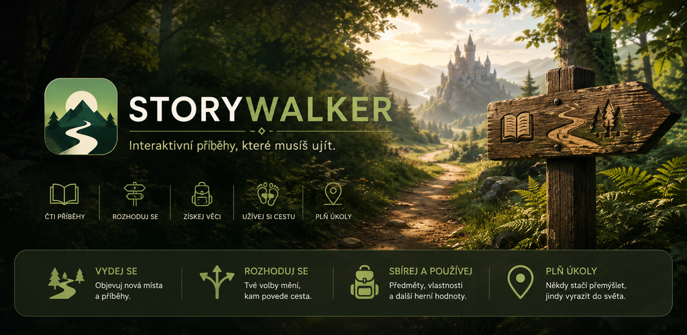

Vyber si dobrodružství
Každý příběh má vlastní svět, pravidla, délku i způsob hraní. Může jít o krátkou procházku nebo výpravu na několik dní.

Interaktivní příběhy v pohybu
StoryWalker propojuje interaktivní příběhy se skutečnou chůzí. Čti, rozhoduj se, plň úkoly a odemykej další části dobrodružství tím, že se opravdu vydáš na cestu.
Jak funguje
StoryWalker kombinuje čtení, rozhodování a pohyb. Hráč postupuje mezi jednotlivými scénami, ale některé cesty odemkne až skutečně ušlou vzdáleností.
Každý příběh má vlastní svět, pravidla, délku i způsob hraní. Může jít o krátkou procházku nebo výpravu na několik dní.
Volby, nalezené předměty, vlastnosti postavy a splněné úkoly mohou měnit další průběh i dostupná řešení.
Chůze odemyká další scény. Během ní mohou nastávat události, náhodné nálezy nebo změny herních hodnot.
Možnosti
Základem je příběh, ale autor jej může doplnit o herní systémy, skutečná místa, zvuky, náhodu nebo dlouhodobou progresi.
Rozhodnutí mohou vést k různým scénám, řešením i zakončením.
Vzdálenost je součástí postupu, ne jen statistika.
Dobrodružství mohou pracovat s předměty, hodnotami a schopnostmi.
Hráč může sledovat aktivní úkoly a jejich průběh.
Volitelné GPS kontroly mohou propojit okamžik příběhu s konkrétní lokalitou.
Příběh mohou doplnit obrázky, zvuky a náhodné efekty.
Dobrodružství
StoryWalker obsahuje vestavěný tutoriál a podporuje import dalších dobrodružství. Na této stránce postupně vznikne katalog oficiálních příběhů.
Krátké úvodní dobrodružství vysvětluje základní ovládání, práci s volbami a postup založený na chůzi.
Součást aplikacePřipravujeme samostatné příběhy různých žánrů a délek, které půjde stáhnout a jednoduše importovat.
PřipravujemeAutor může dobrodružství vytvořit v editoru, exportovat jako ZIP a předat dalším hráčům.
PodporovánoDo budoucna počítáme také s přehledným místem pro ověřené dobrodružství dalších autorů.
Budoucí rozšíření